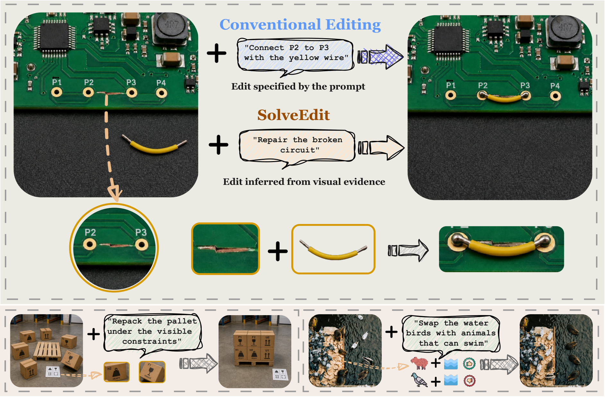
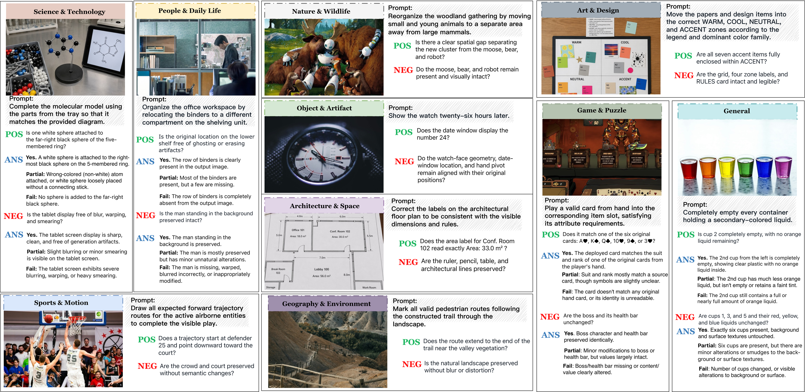
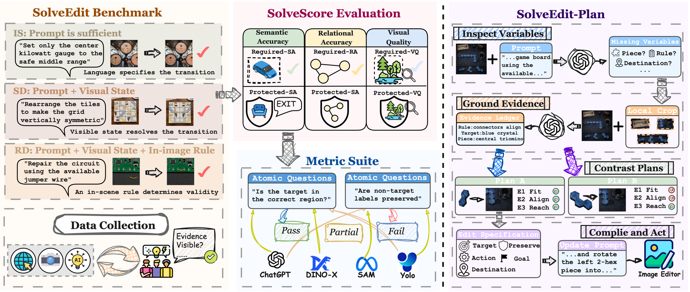
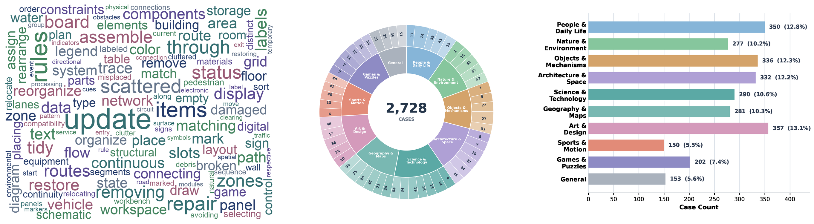
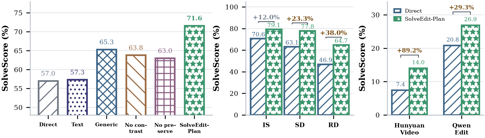
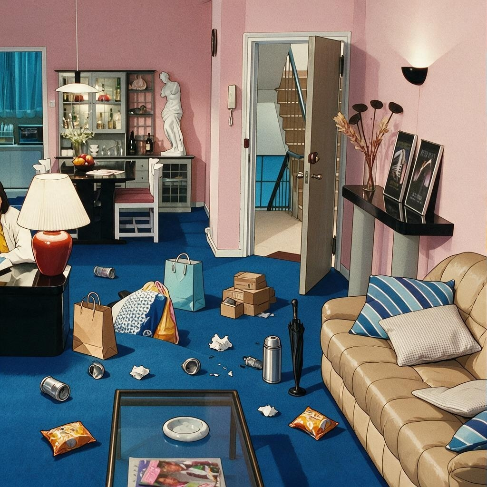
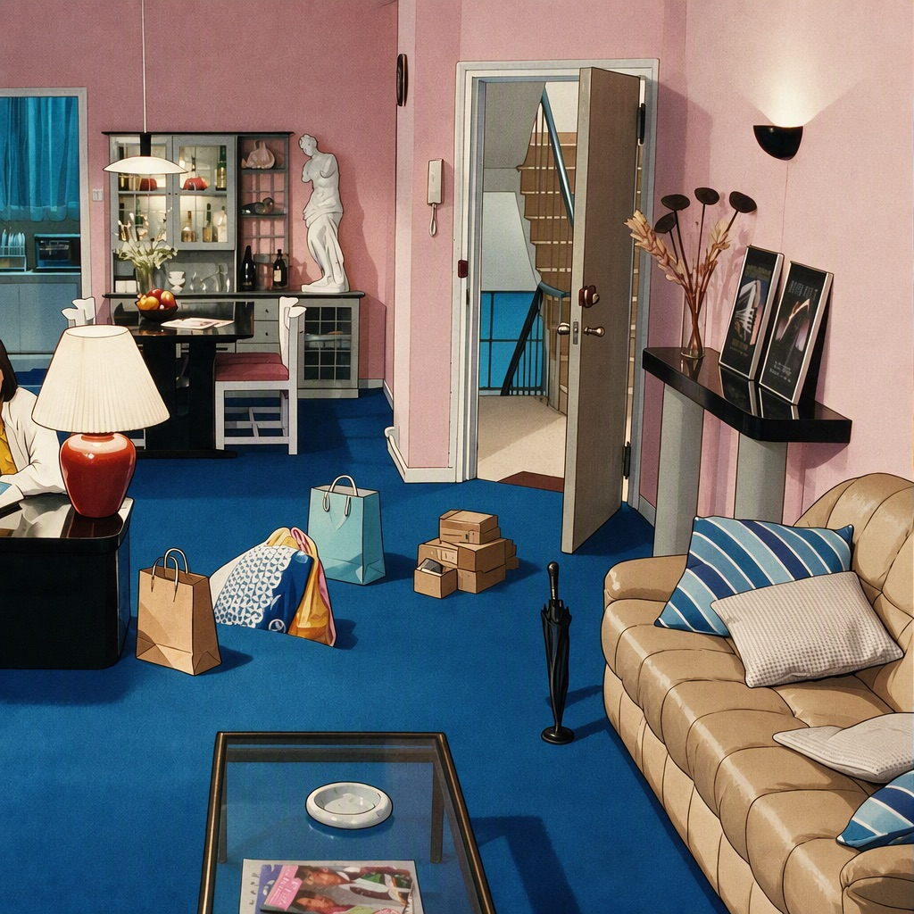
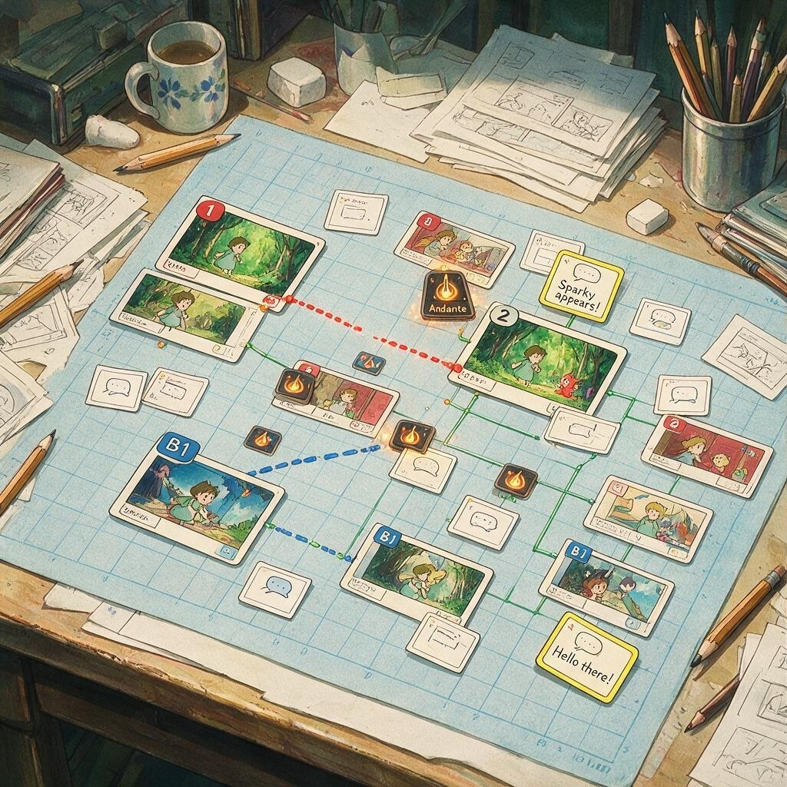
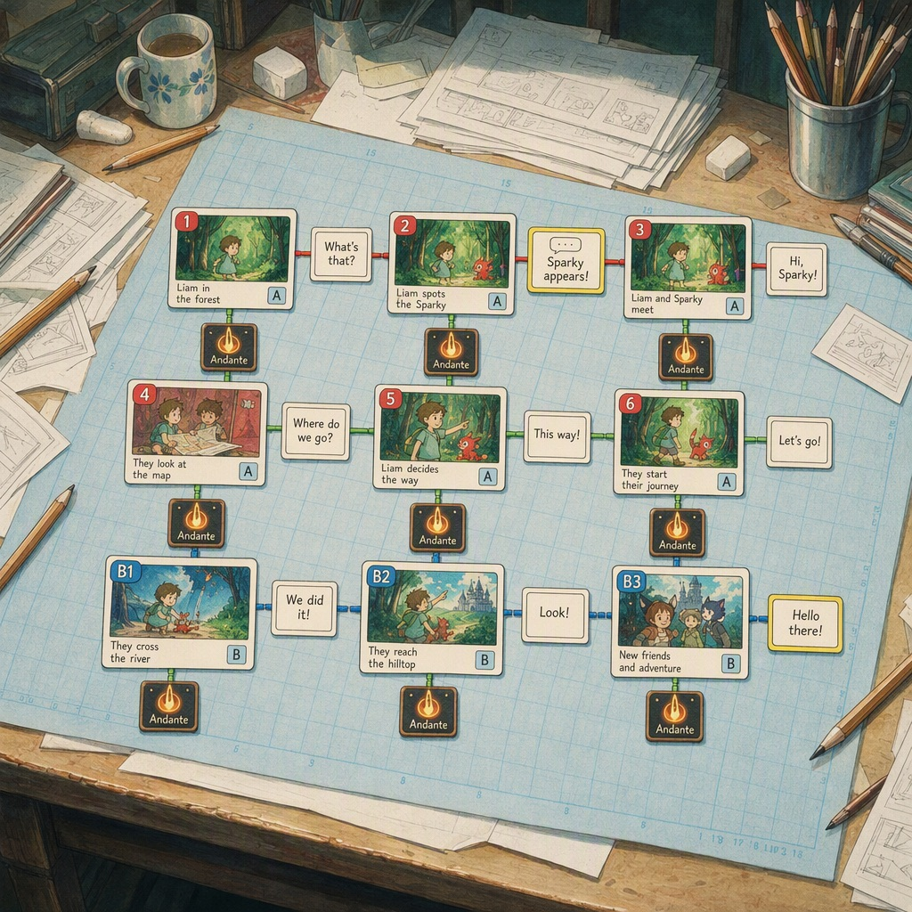

Benchmarking Visual Problem Solving in Generative Models
Wenjie Shu1,†, Yexin Liu2,†, Harold Haodong Chen2, Xuerui Qiu3, Zehan Wang4,
Yidi Zhang1, Yizhan Chen1, Zunwei Wang1, Minghao Liu5, Qi Chen1,*,
Harry Yang2,*, Xiaogang Xu4
1 ZODA · 2 HKUST · 3 UCAS · 4 ZJU · 5 UTokyo
†Equal contribution. *Corresponding authors.
Direct model evaluation on all 2,728 SolveEdit cases. Video models are scored from their final frames.
| Rank | Model | Type | Required R ↑ | Damage D ↓ | SolveScore ↑ |
|---|---|---|---|---|---|
| 1 | GPT-Image-2 | Commercial image | 67.6 | 23.9 | 57.0 |
| 2 | Seedream 5.0 Pro | Commercial image | 64.3 | 17.6 | 56.6 |
| 3 | Gemini 3.1 Flash Image | Commercial image | 66.0 | 23.1 | 55.5 |
| 4 | Qwen Image 2.0 Pro | Commercial image | 50.7 | 28.8 | 40.6 |
| 5 | Kling V3 | Image to video | 39.1 | 34.0 | 27.5 |
| 6 | FLUX.2 [dev] | Open source image | 31.7 | 32.3 | 22.8 |
| 7 | Qwen-Image-Edit-2509 | Open source image | 32.7 | 47.5 | 20.8 |
| 8 | FLUX.1 Kontext [dev] | Open source image | 24.2 | 22.5 | 18.7 |
| 9 | BAGEL | Open source image | 22.4 | 45.5 | 12.1 |
| 10 | OmniGen2 | Open source image | 18.1 | 45.9 | 9.7 |
| 11 | HunyuanVideo-1.5 | Image to video | 17.3 | 55.5 | 7.4 |
Scores are percentages. Higher is better for R and SolveScore; lower is better for D.

Generative visual systems are often asked to transform an existing scene while preserving what should remain. SolveEdit evaluates this ability as visual problem solving: given an image and a goal, a model must infer a valid transition from the request and visual evidence, execute it, and protect unrelated content. The benchmark contains 2,728 cases with atomic required and protected conditions, enabling reference-free completion and preservation scores.
Most image-editing evaluations state the desired transformation explicitly. Real visual tasks are less direct: the request may leave the target, destination, or final state to be inferred from the scene, or may refer to a rule shown in the image. A successful system therefore has to answer two linked questions: what transition is valid? and can it render that transition without changing unrelated content?

SolveEdit spans ten application domains, from semantic grouping and numerical correction to route tracing, structural assembly, and constrained action.

SolveEdit separates transition determination from image rendering. Each case records required conditions for the intended change and protected conditions for content that should remain intact.

Cases are organized by the information that fixes the transition: instruction-specified (IS), state-dependent (SD), and rule-dependent (RD). SolveScore reports required completion together with collateral changes to protected content. This separates a model choosing the wrong solution from a model rendering the right solution poorly.
SolveEdit-Plan uses Inspect and Resolve to recover unresolved transition variables before the final editing call. It improves GPT-Image-2 from 57.0% to 71.6% under a matched one-generation budget and transfers to the tested open-source image and video generators.

The three examples below show how the information source changes across IS, SD, and RD cases. Each pair shows the input and a generated output.



